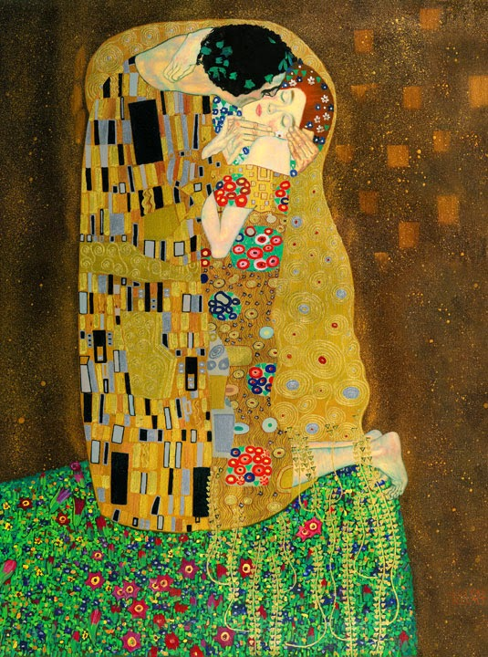

ORIGINAL //
HIGHLIGHT //
ERASURE POEM
THE KISS.
Klimt depicts the couple locked in intimacy, while the rest of the painting dissolves into shimmering, extravagant flat pattern. The patterning suggests the style of Art Nouveau and the organic forms of the Arts and Crafts movement. At the same time the background evokes the conflict between two- and three-dimensionality intrinsic to the work of Degas and other modernists. Paintings such as The Kiss were visual manifestations of fin-de-siecle spirit because they capture a decadence conveyed by opulent and sensuous images. The use of gold leaf recalls medieval "gold-ground" paintings and illuminated manuscripts, and earlier mosaics, and the spiral patterns in the clothes recall Bronze Age art and the decorative tendrils seen in Western art since before classical times.
The man's head ends very close to the top of the canvas, a departure from traditional Western canons that reflects the influence of Japanese prints, as does the very simplified composition. The two figures are situated at the edge of a patch of flowery meadow. The man wears a robe with black and white rectangles irregularly placed on gold leaf decorated with spirals. He wears a crown of vines while the woman is shown in a tight-fitting dress with flower-like round or oval motifs on a background of parallel wavy lines. Her hair is sprinkled with flowers and is worn in a fashionable upsweep; it forms a halo-like circle that highlights her face, and is continued under her chin by what seems to be a necklace of flowers. Similarly juxtaposed couples appear in both Klimt’s Beethoven Frieze and Stoclet Frieze.
It is thought that Klimt and his companion Emilie Flöge modeled for the work but there is no evidence or record to prove this. Others suggest the female was the model known as 'Red Hilda'; she bears strong resemblance to the model in his Woman with feather boa, Goldfish and Danaë. Klimt's use of gold was inspired by a trip he had made to Italy in 1903. When he visited Ravenna he saw the Byzantine mosaics in the Church of San Vitale. For Klimt the flatness of the mosaics and their lack of perspective and depth only enhanced their golden brilliance, and he started to make unprecedented use of gold and silver leaf in his own work.
It has also been argued that in this picture Klimt represented the moment Apollo kisses Daphne, following the metamorphosis of Ovid narrative.